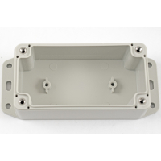

Project template containing the recommended board layout for Hammond Manufacturing RP120:
Gray, Clear Cover/Door: RP1215C - HM5801-ND
Gray, Clear Cover/Door: RP1215BFC - 164-RP1215BFC-ND
Gray: RP1215BF - 164-RP1215BF-ND
Gray: RP1215 - HM1108-ND
White, Off, Clear Cover/Door: RP1210C - 164-RP1210C-ND
White, Off, Clear Cover/Door: RP1210BFC - 164-RP1210BFC-ND
White, Off: RP1210BF - 164-RP1210BF-ND
White, Off: RP1210 - HM5800-ND
Gray, Clear Cover/Door: RP1205C - HM5799-ND
Gray, Clear Cover/Door: RP1205BFC - 164-RP1205BFC-ND
Gray: RP1205BF - 164-RP1205BF-ND
Gray: RP1205 - HM1107-ND
White, Off, Clear Cover/Door: RP1200C - 164-RP1200C-ND
White, Off, Clear Cover/Door: RP1200BFC - 164-RP1200BFC-ND
White, Off: RP1200BF - 164-RP1200BF-ND
White, Off: RP1200 - HM5798-ND
|
|
 |
The "Dwgs.User" layer contains all critical dimmensions in milimeters[inches].
The "Edge.Cuts" layer contains the maximum board outline and holes to align with board standoffs.
PCB Preview: